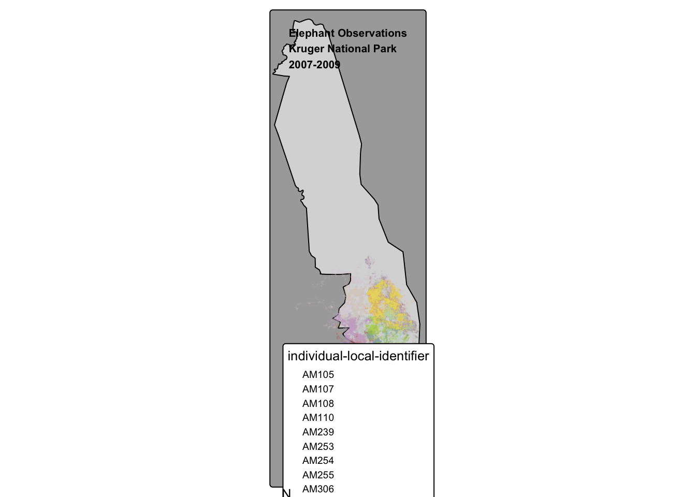

Professional documents should be easy to follow and get the point across to the reader in a concise manner.
Helpful components include:
document header with title, name, and date
ideally, the date reflects the day the document is most recently rendered
all packages are loaded together at the top of the document
include code comments when appropriate
clean code indentation for lists, parameters, functions within functions, etc.
data visualizations such as maps and plots contain all necessary components such as a legend, axes labels, units, and appropriate palette (divergent, colorblind friendly, etc.)
folding code or sourcing separate scripts when appropriate to direct reader’s attention to the important output or to condense code
hiding unnecessary output such as warning messages or loaded packages
succinct documentation between steps, such as section headers, descriptions for an analysis step, and map/plot interpretation
complete and detailed data citations
function definitions should include warnings and errors that ensure the intended operations are executed
Elephant tracking in Krugar National Park
Elephants are intelligent and gregarious animals that tend to travel as a herd and seek out resources such as shrubs and water. Elephants in Krugar National Park were collared with GPS tracking devices from August 2007 through August 2009 (Slotow et al. 2019).
Objective: Use GPS point locations of individual elephants to visualize their movement throughout Krugar National Park in South Africa between 2007 and 2009.
Import the elephant movement data and configure its spatial components
metadata_df <-load_csv(filename ="elephants_metadata.csv",directory ="course-materials",communicate =FALSE)elephants_df <-load_csv(filename ="elephants.csv",directory ="course-materials",communicate =FALSE)# convert the elephant observations to sf objectselephants <-to_spatial_points(data = elephants_df,latitude_col ="location-lat",longitude_col ="location-long")
Visualize data
Import the spatial boundaries for Kruger National Park to serve as a basemap for the elephant tracks
# set bbox to approximate boundaries of Kruger NPkruger <- osmdata::opq(bbox =c(16, -35, 33, -22)) %>%add_osm_feature(key ="boundary", value ="protected_area") %>%add_osm_feature(key ="name", value ="Kruger National Park") %>%osmdata_sf()# subset imported list of elements to just the geodataframekruger_bounds <- kruger$osm_multipolygons
Produce a map of elephant observations to visualize the individual movement of elephants
Show the code
title ="Elephant Observations\nKruger National Park\n2007-2009"# basemap: Kruger National Park geometrytm_shape(kruger_bounds) +tm_borders(col ="black", lwd =0.5) +tm_fill(col ="black") +# overlay all elephant GPS locations tm_shape(elephants) +tm_dots(col ="individual-local-identifier",palette ="Set3",# small dots to distinguish between individualssize =0.001,border.col ="black",title ="Individual") +tm_layout(bg.color ="darkgrey",legend.bg.color ="white",title = title,frame =TRUE,title.position =c("center", "top"),title.size =1.2,title.fontface ="bold",legend.frame =TRUE,legend.outside =TRUE,legend.position =c(0.08, 0.3),legend.title.size =0.8,legend.text.size =0.6) +# add compass with only North arrowtm_compass(position =c(0.0, 0.01),show.labels =1)

Map interpretation
Elephants in Kruger National Park fitted with GPS collars are primarily located in the southern part of the park. The clustered tracks imply that this species is highly gregarious. Tracks that expand beyond park boundaries, notably on the western side, imply that the elephants could be seeking resources such as food or water outside of the park. Alternatively, error in the GPS location for these points could explain this perceived movement.
Futher analysis steps could include:
zooming in further to the realized niche
partitioning the data temporally
using metadata to advise how to subset the data to view fewer elephant locations at a time
overlaying other vector or raster data layers such as surface water and vegetation to understand if the elephants’ movement is driven by these resources
Data Citations
Data
Citation
Link
Elephant observations
Slotow R, Thaker M, Vanak AT. 2019. Data from: Fine-scale tracking of ambient temperature and movement reveals shuttling behavior of elephants to water. Movebank Data Repository. https://doi.org/10.5441/001/1.403h24q5